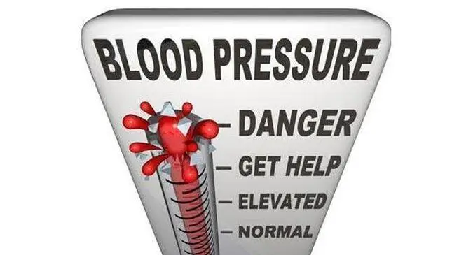

Blood pressure is the force of your blood as it flows through the arteries in your body. Arteries are blood vessels that carry blood from your heart to the rest of your body. When your heart beats, it pushes blood through your arteries. As the blood flows, it puts pressure on your artery walls. This is called blood pressure.
High blood pressure (also called hypertension) happens when your blood moves through your arteries at a higher pressure than normal. Many different things can cause high blood pressure. If your blood pressure gets too high or stays high for a long time, it can cause health problems. Uncontrolled high blood pressure puts you at a higher risk for stroke, heart disease, heart attack, and kidney failure.
There are 2 types of high blood pressure.
1.Primary hypertension. This is also called essential hypertension. It is called this when there is no known cause for your high blood pressure. This is the most common type of hypertension. This type of blood pressure usually takes many years to develop. It probably is a result of your lifestyle, environment, and how your body changes as you age.
2.Secondary hypertension. This is when a health problem or medicine is causing your high blood pressure. Things that can cause secondary hypertension include:
● Kidney problems
● Sleep apnea
● Thyroid or adrenal gland problems
● Some medicines

Food, medicine, lifestyle, age, and genetics can cause high blood pressure. Your doctor can help you find out what might be causing yours. Common factors that can lead to high blood pressure include:
● A diet high in salt, fat, and/or cholesterol
● Chronic conditions such as kidney and hormone problems, diabetes, and high cholesterol
● Family history, especially if your parents or other close relatives have high blood pressure
● Lack of physical activity
● Older age (the older you are, the more likely you are to have high blood pressure)
● Being overweight or obese
● Race (non-Hispanic black people are more likely to have high blood pressure than people of other races)
● Some birth control medicines and other medicines
● Stress
● Tobacco use or drinking too much alcohol